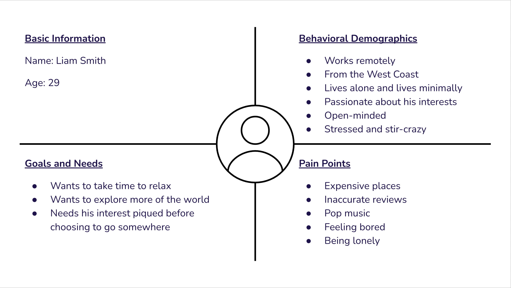
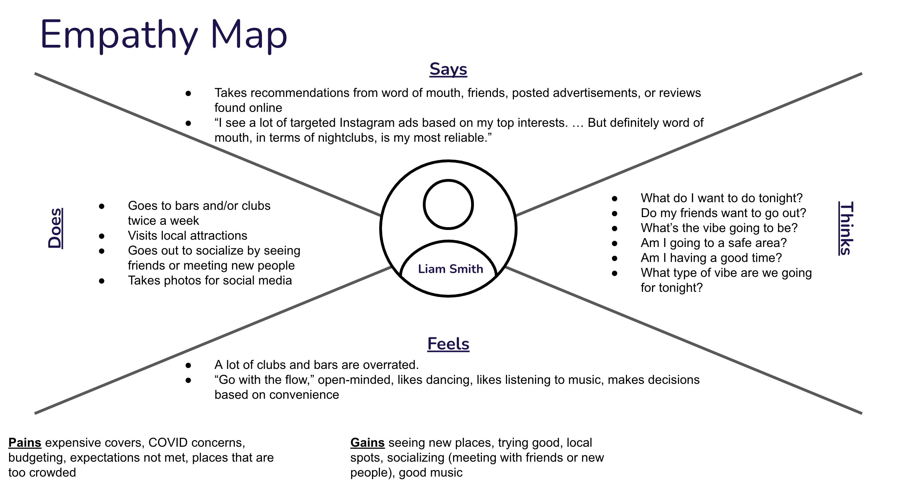

"GoodNight" Mobile App Case Study
Research Background
Due to the years-long restrictions imposed by the COVID-19 pandemic, travelers and non-travelers alike looked for an escape from the realities
of their conventional, daily stresses by exploring more of the world that was previously restricted to them. Our team recognizes that travelers
want to take advantage of all the hours that were lost to them, and they want to explore all the opportunities that a new place has to offer,
whether during the day or during the night.
We wanted to develop an app that allows users to research and filter different nightlife activities based on the user's unique interests.
Team
User Research, Design Thinking, Problem Definition, Ideation
Alexis Ang, Rhonda Eltobgi, Lisa Kim
Prototyping
Alexis Ang
Tools
Miro, Google Slides, Figma
Duration
09 / 01 / 22 – 09 / 26 / 22
approx. 3 weeks
Proto Persona
This proto persona was created based off very basic assumptions of who a traveler might be, how a traveler might be living, what a traveler might want, and what a traveler might be frustrated by. At this point in the process, our team had a vague idea of creating an application that appealed to a user's interests, hence points like “Needs his interest piqued before choosing to go somewhere” and his pain point of “Pop music.”

Interview Questions
Prior to coming up with our interview questions, our team considered that most people traveled for relaxation and leisure. Moreover, we were aware that the most abundant individuals we had in our respective social circles were young adults. With these considerations in mind, we determined that “nightlife” had the most overlap with the aspects of relaxation and leisure and the lifestyles of most young adults. Our interview questions were created with the intention to research young adult habits, preferences, and pain points when it came to planning a night out. Our team conducted six interviews total.
- What are some of the reasons that you plan a trip?
- What does the ideal planning process look like for you when planning a night out?
- What are some things that you like to do on your trip?
- What influences you to visit a specific bar or club?
- How much time do you spend researching nightly activities?
- What are some tools that you use to research local bars or clubs?
- When planning your trip, how much do you expect to spend on a night out?
- What are some improvements you would like to see in today's world of technology to make planning nightly activities easier?
- What are some reasons you would go out at night?
- How often do you go out to bars or clubs?
- What are some struggles you face when planning to go out?
- What do you do to ease these struggles?
- What are some of the things you look forward to when you go out?
- Do you like to go to popular attractions or visit hidden gems?
- Do you make a schedule ahead of time or do you go with the flow?
- What amenities are important when choosing where to go?
- What factors play a role in deciding whether or not you want to stay at that location?
- What are your top priorities when planning your nightly activities?
- What features would you like to see in an application that narrows down nightlife activities?
After completing our user interviews, our team created and organized an affinity diagram and an empathy map, which led to the creation of our final user persona.
Affinity Diagrams
Empathy Map

Final User Persona

A completed user persona allowed our team to empathize deeply with challenge at hand, and we created the following statements to define a problem that we could solve.
User Insight Statement
Liam Cummings and other young adults need nightlife activities to destress and unwind because nightlife activities can help relieve pressure from work and pressure from personal issues, as well as allow young adults to enjoy time socializing with people after a long week.
Problem Statement
Young adults struggle to plan a night out because they cannot filter bars, clubs, or other nightlife activities based on their interests through one service. How might our team ease the frustrations of finding nightlife activities that appeal to the unique interests of young adults?
From our interview responses and affinity diagrams, we condensed similar comments across the six interviews and separated these comments into "I like...", "I wish...", and "What if..." statements. The statements were then divided into more specific categories based on similarity. Our team then dot-voted on the statements that we thought would be the most valuable in an app. We gave ourselves two votes each per category, and limited ourselves to one vote each in categories that had fewer options. Any statement that received more than two votes was then moved into a feature categorization matrix as well as organized into a value proposition canvas.